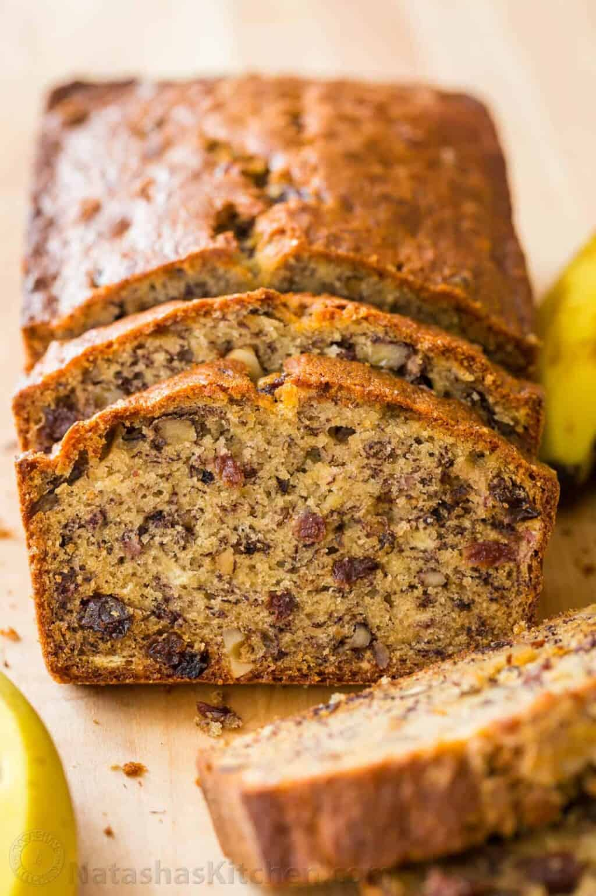

Banana Bread

The Picture of a well-done banana bread
Banana bread is a type of sweet bread made from
mashed bananas. It is often a moist and
sweet quick bread but some recipes are yeast raised.
Ingredients
- 1 1/4 cups sugar
- /2 cup butter, softened
- 2 eggs
- 1 1/2 cups mashed very ripe bananas (3 to 4 medium)
- 1/2 cup buttermilk
- 1 tsp vanilla extract
- 2 1/2 cups Gold Medal™ All-Purpose Flour
- .5 cups all-purpose flour
- 1 teaspoon baking soda